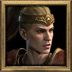
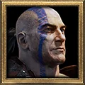
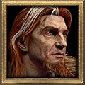
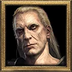
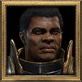
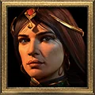
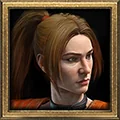
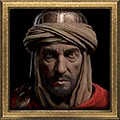

IAS Calculator
How many frames your attack takes, and the IAS that reaches the next breakpoint.
Character

AmazonAssassin
Barbarian
Druid
Necromancer
Paladin
SorceressWarlock
Rogue Scout
Desert MercBash Barb Frenzy Barb
Frenzy BarbWereform
NoneWerebearGranted by the Beast runeword (axe, scepter or hammer), which also carries a level 9 Fanaticism aura. Only Standard Attack works in this form.WerewolfOnly the Druid, or the Barbarian with Wolfhowl, can take Werewolf form.
Skill
Weapon
Speed
Breakpoints
Now:
11frames
2.27 attacks per second
at 0 IAS
Next breakpoint:
10frames
2.50 attacks per second
at 11 IAS (+11)
All breakpoints
EIASEffective IAS: skill speed bonuses, minus the weapon speed modifier, plus item IAS after diminishing returns. The frame formula reads this value. EIAS = SIAS − WSM + ⌊120 × IAS ÷ (120 + IAS)⌋. Example: Phase Blade (WSM -30), 20 IAS, no skill bonus: 0 + 30 + 17 = 47 EIAS.IASIAS from gear other than the weapon. The weapon IAS stays as entered. Item EIAS = ⌊120 × IAS ÷ (120 + IAS)⌋
IAS = gear + weapon. Example: 24 IAS gives 20. 48 IAS gives only 34.FanaticismFanaticism skill level. The other speed sources stay as entered. s = ⌊110 × level ÷ (level + 6)⌋
SIAS = 10 + ⌊30 × s ÷ 100⌋. Example: Level 1 gives 14, level 20 gives 35, level 60 gives 40.
| IAS | Frames | Attacks per second | Status |
|---|---|---|---|
| 0 | 11 | 2.27 | Current |
| 11 | 10 | 2.50 | Next |
| 26 | 9 | 2.78 | – |
| 48 | 8 | 3.13 | – |
| 86 | 7 | 3.57 | – |
| 180 | 6 | 4.17 | – |